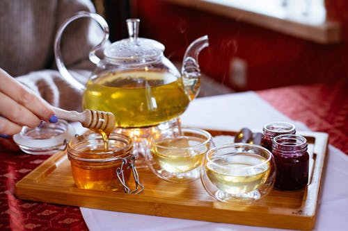
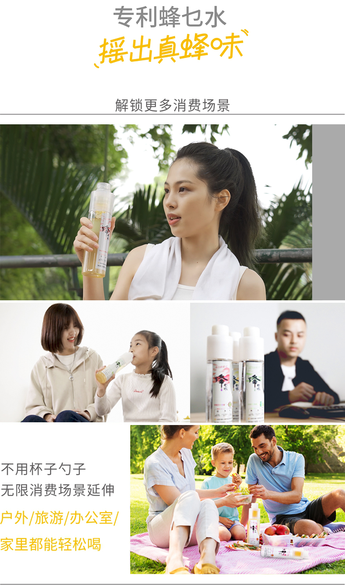
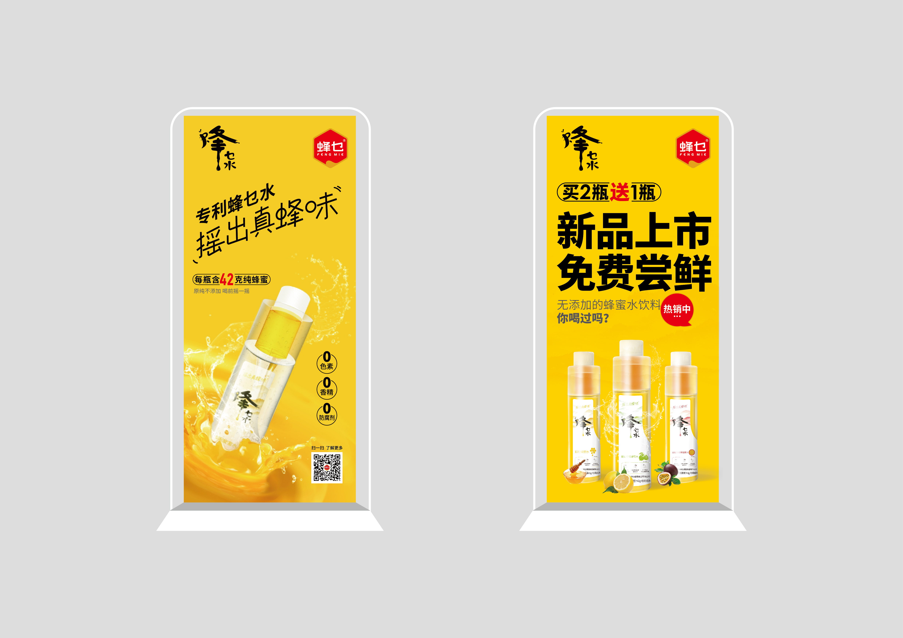

一瓶颠覆蜂蜜消费方式的蜂蜜饮料
现调即饮方式，延伸蜂蜜消费场景
引领蜂蜜消费新潮流
东莞蜂乜保健食品有限公司是一家致力于打造创新蜂产品的企业，其项目团队具有多年传统蜂产品企业营销管理经验，依托多年的行业经验和资源积累，
蜂乜推出了新一代即调蜂蜜水饮料，致力于改变传统蜂蜜消费场景，将以前只能在家里喝的蜂蜜做成即饮的饮料，延伸蜂蜜消费场景和消费人群。

作为一款全新的饮料，市场还缺乏认知和消费习惯。同时从传统蜂蜜消费习惯来看，目前蜂蜜类饮品多以家庭自调为主，对于蜂蜜水饮料的接受度如何，市场缺乏消费数据，
而其他的蜂蜜饮料因为蜂蜜含量极低，在一定程度上容易误导消费者对产品的认知，在蜂蜜水饮料处于市场培育期的市场现状下，蜂乜水应该如何突出产品核心，引爆市场，打造品牌优势和影响力？
蜂蜜水饮料市场还处于导入期，市场上除少量蜂蜜果酱、蜂蜜果味茶饮料外，蜂蜜水饮料无论是产品还是消费者认知均很少，蜂蜜水饮料处于有产品无品牌的阶段。蜂蜜水的目标市场如何界定，是有传统蜂蜜消费习惯的人群还是面向年轻消费人群？
同时，目前市场上蜂蜜造假、掺假情况严重，造成很多消费者不敢轻易购买蜂蜜产品。其次蜂蜜消费场景的狭窄，蜂蜜类产品品类少，在一定程度上制约了人们的蜂蜜消费热情，市场并不热闹。所以从市场需求和消费热情来看，走传统蜂蜜市场肯定难以获得突破，唯有换一条赛道做营销。
基于产品的售卖场景，我们面对的消费者更多是年轻人，如何引起年轻人的注意，进而勾起他们的购买欲望，如何打造出一个全新的饮料品类？
蜂乜水目前面临的问题
如何开拓即饮式蜂蜜饮料市场，突出产品核心，打造品牌优势和影响力？
如何精准定义蜂乜水，让产品与目标消费者产生链接？
如何抓住新一代消费升级市场，刺激消费者购买化即饮蜂蜜饮料的消费欲望？
品牌定位
原纯蜂蜜甄选家
真蜂蜜 · 不添加
针对蜂乜品牌，我们集中诉求“真”的品牌定位，强化品牌致力于做原纯真蜂蜜产品的理念和标签，打造消费者放心的蜂蜜品牌。

基于蜂乜旗下的产品品牌—蜂乜水，我们以“原纯即配蜂蜜水”为定位，强化即配认知，从而与其它预调蜂蜜饮料形成差异化区隔，同时在概念上突出原纯味，不添加的产品概念，
打造出一款全新的蜂蜜水饮料，开创了即配蜂蜜水的新品类，从而在传统蜂蜜和蜂蜜饮料之外开辟了一个全新的市场。
市场营销策略
蜂蜜消费市场混乱，纯蜂蜜、蜂蜜风味饮料在市场上已经有比较知名的品牌。但即饮蜂蜜水饮料还处于市场导入期，市场普及低，消费认知少，产品认知更少。
基于此，我们提出全新的产品概念“分离式蜂蜜水”，突出即配即饮的产品认知，强化差异化的新产品概念，从而从传统蜂蜜市场切出新需求。
抢占即饮蜂蜜饮料的品类标签
在国内蜂蜜水饮料市场，即饮蜂蜜水饮料还属于新兴品类，不同于传统蜂蜜+果味的风味饮料，即饮纯蜂蜜+水饮料，市场和行业没有统一标准，
仅有少数厂家涉足，并没有在市场上掀起过大的水花，还未真正进入大众消费者视野，市场处于导入期，未来成长机会较大。

蜂蜜水饮料目前处于有产品无品牌的阶段，无论是产品还是消费者认知均很少，我们需要快速占领消费者心智，抢占即饮蜂蜜饮料的品类标签，让蜂乜水成为即饮蜂蜜饮料的品类代表。
每瓶42克纯蜂蜜，喝前摇一摇
蜂乜蜂蜜水即饮饮料通过产品结构和形态改善，创新品类，颠覆性的改变传统蜂蜜的饮用习惯，让蜂蜜饮用有了更多场景和可能。

每瓶饮料包含42克原纯蜂蜜，蜂乜水采用创新专利技术，通过蜂蜜和水的分离储存灌装，在保证蜂蜜性状稳定和口感的同时，又以独特的工艺结构将水和蜂蜜连成一体式的即配蜂蜜水饮料。
拧开瓶盖，摇一摇就能喝，解决了传统蜂蜜不能直接饮用的难题，有效拓宽了蜂蜜的使用场景，在路边便利店或任何地方拿出一瓶，扭一下盖子然后摇匀，马上就能喝到纯正的蜂蜜水，不受时间空间限制。
3、差异化爆品策略
一瓶颠覆蜂蜜消费方式的饮料
每瓶42克纯蜂蜜，真纯原味无添加
对于新一代消费者来说新鲜永远都是不会过时的潮流，比起罐装蜂蜜的麻烦，消费者更愿意怎么方便怎么来，随时随地享受蜂蜜水。蜂乜水的诞生让消费者可以在任何场景下都可以喝到蜂蜜水，创新的包装方式和形态，延伸蜂蜜的消费场景，引领了蜂蜜消费的新潮流。
营销口号
每瓶42克纯蜂蜜
扭出纯蜂蜜，摇出真蜂味
告诉消费者蜂蜜与水分离，纯蜂蜜+水现调，摇一摇就能喝的蜂蜜水，跟家里喝的一样，从而和预调的蜂蜜水饮料区隔。
诉求新产品概念，传递真/纯蜂蜜的概念，突出产品天然无添加的特性。改变以前要用勺子舀并用水兑拌的传统蜂蜜饮用方式，传递品牌现调的属性，建立品类标签。
品牌视觉符号
基于企业的业务发展方向，logo以品牌名称乜字出发点，构画出蜂巢的形状，以乜字为识别，具有比较高的识别性，能使消费者具有很高的品牌认知，也表示蜂乜具有时尚 ，年轻， 创新的特质，未来合作共赢，谱写辉煌诗篇的美好愿景。
2、产品包装
通过蜂场的现实情境把山、水、树木、花草等自然景象进行视觉化符号设计，用简洁的画面来传递原生态概念。



济南海右博纳品牌营销咨询有限公司
Copyright 2001-2019 All Rights Reserved Sivibrand.
王伟品牌顾问微信